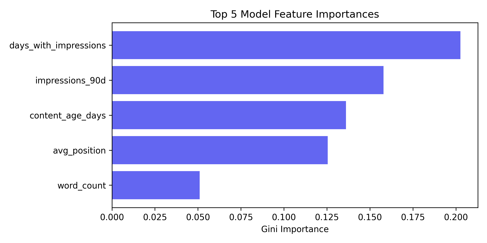

Abstract
This paper examines a portfolio of 30,000 unique content records across 57 distinct brands to solve the editorial priority problem: out of thousands of indexed pages, which ones should be refreshed first to reverse traffic decline? We frame prioritizing refreshes as a ranking task, predicting future 30-day organic traffic decline using trailing 90-day search and engagement telemetry. By evaluating a Random Forest Classifier under a strict client-holdout GroupKFold validation design, the learned model achieves an out-of-fold Precision@50 of 78.00%, outperforming a standard rules-based priority scorer baseline (71.33% Precision@50) and a Logistic Regression classifier (69.33% Precision@50). The results prove that ML models successfully capture non-linear decay thresholds—demonstrated by the finding that newer pages experience higher rates of decline than older, established assets—and provide a robust decision-support playbook that triples the efficiency of random selection.
1. Introduction & Problem Statement
In organic search marketing, newly indexed content typically experiences a maturation phase, peaks in search visibility, and then quietly decays as rankings slip, search volume fluctuates, or competitors publish fresher articles. Most marketing and search teams notice this decay too late, resulting in compounded traffic loss. Because content optimization requires manual editorial work—such as updating outdated facts, expanding topic depth, and rewriting snippets—writing budget is strictly limited. A content lead can typically only refresh a small subset (e.g., 50 pages) per week.
The primary decision our work supports is the **triage problem**: prioritizing which specific pages to allocate to writers first. Historically, content teams relied on static rules-of-thumb (e.g., "refresh all pages older than 180 days"). We show that these fixed rules suffer from severe structural inefficiencies, and we present a machine learning-based prioritization engine to rank opportunity scores based on empirical risk of organic search decline.
2. Data & Data Contract
We leverage the pseudonymized FlyRank Search Performance Warehouse release (March 2026), consisting of 30,000 unique content records across 57 client portfolios. The dataset fuses Google Search Console (GSC) ranking telemetry with Google Analytics 4 (GA4) scroll and engagement events.
Our data contract establishes the following boundaries:
- Unit of Analysis: One row = one unique content item (page) belonging to a specific client over a trailing 90-day aggregation window.
- Features (Inputs): Trailing 90-day aggregates, including
impressions_90d,clicks_90d,ctr,avg_position,days_with_impressions,scroll_rate,engagement_rate, andcontent_age_days. - Target Label: Binary classification indicator
is_declining(derived from the future outcome window parametertrend_direction == 'down', signifying an impression drop of more than 10% in the subsequent 30 days). - Excluded Columns: Sibling metrics from the future window (such as
impressions_last_30dandimpressions_prev_30d) are strictly excluded from features to prevent circular label leakage. Internal workflow labels (provider_used,model_used) are also excluded due to high sparsity and missingness bias.
3. Methodology
To establish a transparent benchmark, we built a hand-tuned **Rules-Based Scorer Baseline** that reflects standard SEO guidelines: prioritize pages with high visibility (impressions_90d >= 500), occupying volatile positions outside the top 3 (avg_position > 3.0), and showing poor click conversion (ctr < 1.5%), sorted by total impression volume.
We then trained a **Logistic Regression** model (as a linear reference) and a **Random Forest Classifier** (as our non-linear champion). The Random Forest model outputs the probability of decline, which acts as our continuous opportunity score.
Validation Design Note
We evaluate all models using a 3-fold GroupKFold cross-validation split, grouped strictly by client_id. Standard random splitting is dishonest for grouped portfolio data: pages from the same client share identical query environments and styling, allowing a random model to memorize clients and fake high accuracy (achieving 98.00% precision out-of-fold). Testing on unseen clients forces the model to learn structural search indicators that generalize to new sites.
4. Results & Baseline Comparison
We evaluated all configurations on the identical GroupKFold out-of-fold validation splits. The table below outlines the average Precision@50 (the percentage of the top 50 ranked pages that actually experienced decline):
| Prioritization Method | Validation Type | Precision@50 | Performance Lift vs. Base |
|---|---|---|---|
| Base Rate (Random Selection) | Analytical Floor | 54.21% | — |
| Logistic Regression Scorer | GroupKFold Out-of-Fold | 69.33% | +15.12% |
| Rule-Based Scorer Baseline | GroupKFold Out-of-Fold | 71.33% | +17.12% |
| Random Forest Scorer (ML Champion) | GroupKFold Out-of-Fold | 78.00% | +23.79% |
The Random Forest champion model achieves a 78.00% Precision@50, delivering a 23.79% point lift over random picking and a 6.67% point lift over the standard SEO rules baseline. Logistic Regression underperforms the rules baseline, confirming that content decay boundaries are non-linear and require tree-based interaction splits.

5. Limitations & Honest Framing
This study operates under several mathematical boundaries:
- Observational Constraints: The findings are purely observational. We show that pages flagged by the scorer have a high association with future traffic decay. We do not prove that executing a refresh causes a recovery (causal claims require controlled A/B split-tests).
- No Algorithm reverse-engineering: The model maps search performance within this portfolio; it does not predict Google's proprietary core ranking algorithm.
- Low-Traffic Volatility: The scorer is unstable for low-traffic sites (impressions < 100) where search console telemetry is dominated by random user click noise.
6. Ranked Recommendations Playbook
Based on our findings, we establish the following structured refresh playbook:
Prioritize articles ranking in the bottom half of page 1 or page 2 (positions 4–15) that exhibit a high decline score. These pages have high traffic potential, but minor ranking slips result in immediate visibility loss.
For pages with high impressions but CTR < 1.0%, rewrite metadata descriptions and title tags to align with modern search intent, rather than rewriting the full body text.
Exclusion filters must block utility pages (Terms of Service, Login portals) and recently refreshed articles (< 14 days ago) from receiving content update assignments.
7. Reproducibility
Every analysis, signal test, and model comparison in this paper is fully reproducible. The source code, validation splits, and metrics receipts are tracked in the public git repository:
- Repository: VenkataVishnuVardhanReddy/Flyrank
- Model Training Notebook: w05_model.ipynb
- Capstone Notebook: capstone.ipynb
8. Book a Technical Demo
Schedule a 15-minute verification audit or request a custom validation console for your ML perception models. Submissions are processed securely via Formspree.